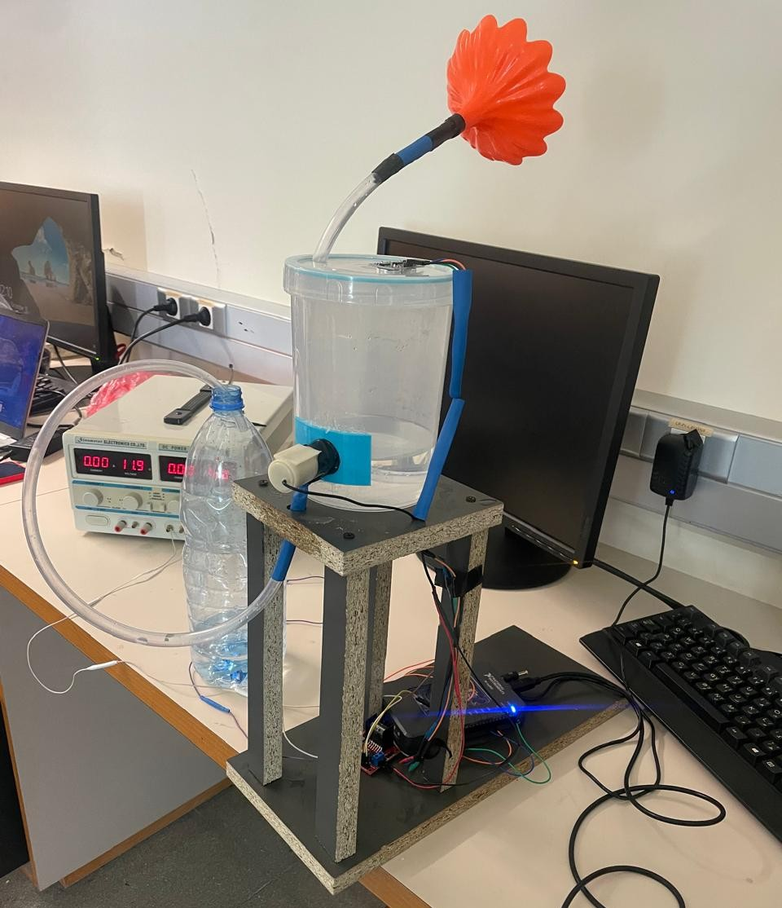
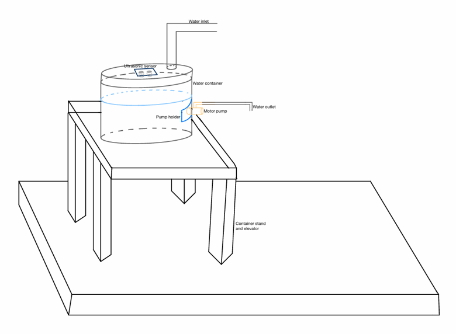
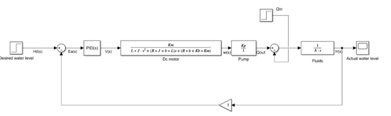
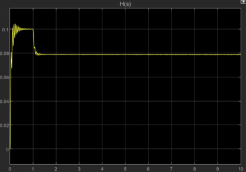
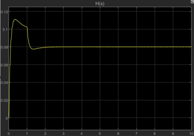
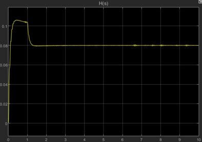
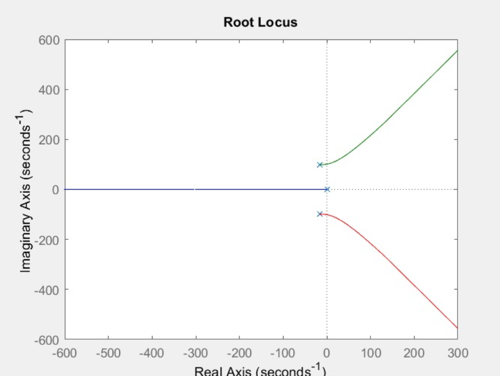
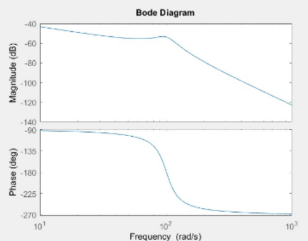
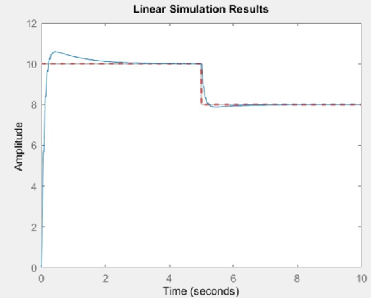
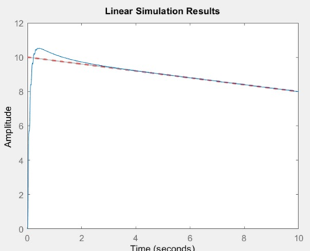

DC motor dynamics
The electrical and mechanical behavior of the motor was modeled to relate the applied voltage to rotational speed.
CONTROL SYSTEMS ENGINEERING · DECEMBER 2024
Designed, modeled, and implemented a closed-loop water-level control system capable of automatically regulating the height of water in a reservoir through real-time feedback. The project integrated DC motor and pump modeling, fluid-system dynamics, PID controller design, MATLAB/Simulink simulation, stability analysis, and embedded hardware implementation.

FEEDBACK CONTROL · PID · EMBEDDED SYSTEMS
The project investigated how a feedback controller can maintain a desired water level by continuously measuring the reservoir height and adjusting pump operation.
The development process extended from mathematical modeling of the coupled electrical, mechanical, and fluid dynamics to controller optimization, simulation, and physical integration.
Automated water-level regulation is important in industrial processes, water-management infrastructure, storage tanks, and reservoir operations.
Maintaining a desired water level requires continuous monitoring and adjustment of fluid flow. Without automatic regulation, variations in inlet flow and operating conditions can cause deviations from the desired reservoir level.
The objective was to develop a closed-loop feedback system that continuously compares the measured water height against a reference level and adjusts pump operation through PID control.
The initial concept consisted of a reservoir equipped with an ultrasonic level sensor, a water inlet, and a motor-driven pump responsible for discharging water from the tank.
The ultrasonic sensor measures the water height and provides feedback to the controller. The controller compares this measurement with the desired level and determines the appropriate pump command.
The inlet flow was represented as an external disturbance in the mathematical model, allowing the system to be evaluated under changing fluid-input conditions.

The initial engineering concept established the arrangement of the reservoir, ultrasonic sensor, pump holder, motor pump, inlet, and outlet.
This configuration provided the physical basis for developing the mathematical model and subsequent control architecture.

The block diagram represents the complete feedback-control structure. The reference water level is compared with the measured output to generate an error signal. This error is processed by the PID controller, which determines the motor-pump command.
The pump discharge influences the tank dynamics, while the inlet flow acts as an external disturbance. The resulting water level is continuously fed back to the controller.
A mathematical model was developed to describe the coupled electrical, mechanical, and fluid dynamics of the system.
The modeling process was divided into three interconnected subsystems: the DC motor, the pump, and the fluid reservoir. Each subsystem was represented using differential equations and transfer functions to establish the overall dynamic model.
The electrical and mechanical behavior of the motor was modeled to relate the applied voltage to rotational speed.
The motor-driven pump was modeled to relate rotational speed to the volumetric discharge flow rate.
Conservation of mass was applied to describe changes in reservoir water height as a function of inlet and outlet flow rates.
The fluid subsystem was developed using conservation of mass, relating the rate of change of stored water to the difference between inlet and outlet volumetric flow rates.
The motor model incorporated the electrical resistance, inductance, rotor inertia, friction coefficient, and motor constants. The pump model then connected motor rotational speed to water discharge.
Combining these relationships provided a mathematical representation of the overall motor-pump-tank system for subsequent controller design.
A PID controller was designed to regulate the water level by processing the difference between the desired reference and the measured reservoir height.
Controller tuning focused on balancing response speed, overshoot, settling behavior, and steady-state accuracy. The proportional and integral gains were adjusted to investigate their influence on the system response.
The derivative gain was set to zero in the configurations documented in the project.
Multiple controller configurations were evaluated in MATLAB/Simulink to investigate how changes in proportional and integral gains influenced transient response and steady-state behavior.
The following comparisons illustrate the tuning process and the selection of the final simulation configuration.

The first configuration investigated proportional control without integral or derivative action.
This provided a reference for examining the transient behavior of the system before introducing a higher integral contribution.

Integral action was introduced to investigate its influence on the controller response.
Increasing the integral gain changed the transient behavior, providing a basis for comparison with the other configurations.

The selected configuration used a proportional gain of 180 and an integral gain of 180, with derivative action disabled.
This was the preferred configuration according to the project's controller evaluation, balancing the response characteristics considered during tuning.
Different controller gain values were used for the mathematical simulation and physical implementation. These configurations are presented separately because the simulated model and the actual hardware implementation represent different operating environments.
Selected simulation configuration for the mathematical control model.
Controller gains documented for the physical prototype implementation.
Continuous measurement and correction of water-level deviations through pump control.
Stability analysis was performed to investigate the dynamic behavior of the modeled system and assess its response under different operating conditions.
Root locus and Bode diagrams were generated using MATLAB to examine the system's pole behavior and frequency response.

Root locus analysis was used to investigate how the closed-loop pole locations change as system gain varies.
This provided insight into the system's dynamic characteristics and supported the stability assessment during controller development.

Bode analysis was performed to examine the system's magnitude and phase response over a range of frequencies.
The frequency-domain representation provided an additional perspective on the dynamic characteristics of the modeled control system.
The complete mathematical model was implemented in MATLAB/Simulink to evaluate the behavior of the closed-loop system under different reference inputs.
Step and ramp inputs were used to investigate the controller's ability to track changes in the desired water level and examine the resulting transient response.

The step-response simulation investigated how the system reacted to a sudden change in the desired water level.
The documented simulation included a reference transition from 10 to 8, allowing the response to be examined during a change in operating conditions.
The report recorded an approximate rise time of 0.3 seconds and settling time of 1.2 seconds for the specified step-response evaluation.

Ramp-input simulation was used to investigate system behavior under a continuously changing reference signal.
Unlike a step input, a ramp signal allows the evaluation of the system's response to a reference that changes progressively over time.
Following mathematical modeling and simulation, the control strategy was implemented on a physical water-level regulation prototype.
The hardware configuration integrated an HC-SR04 ultrasonic sensor, an NI myRIO controller, a DC motor-driven water pump, and associated electronic connections.
The ultrasonic sensor provided water-level measurements, while the embedded controller processed the feedback and generated the corresponding pump control command.
The physical prototype brought together the reservoir, water inlet, pump assembly, ultrasonic sensor, and embedded electronics.
This stage translated the mathematical control architecture into a physical electromechanical system capable of demonstrating automatic water-level regulation.
The physical demonstration illustrates the operation of the assembled water-level control system, including the interaction between the reservoir, sensing arrangement, pump, and control electronics.
The video provides a direct view of the implemented prototype and its real-world operation, complementing the mathematical and simulation results presented earlier.
The evaluation process combined mathematical analysis, simulation, controller tuning, and physical prototype operation.
The simulation results were used to investigate the theoretical behavior of the modeled system, while the physical demonstration provided an opportunity to observe the integrated hardware implementation.
Particular attention was given to reference tracking, transient response, controller tuning, sensor feedback, and the differences between idealized mathematical models and physical operating conditions.
Step and ramp simulations were used to investigate the response of the modeled closed-loop system.
Root locus and Bode analysis supported the evaluation of the system's dynamic behavior.
The hardware demonstration illustrated the integration of sensing, control, and pump actuation.
As part of a three-member engineering team, I contributed to the development of the mathematical model, controller design, stability analysis, simulation, and physical implementation of the water-level control system.
Developed the dynamic representation of the DC motor, pump, and fluid reservoir, connecting their individual behaviors into an overall mathematical model.
Designed and tuned the feedback controller to regulate the desired water level while evaluating transient response and steady-state accuracy.
Generated and analyzed root locus and Bode diagrams to investigate system stability and frequency-domain behavior.
Developed the closed-loop simulation model and evaluated system response under step and ramp reference inputs.
Participated in integrating the ultrasonic sensor, NI myRIO controller, motor-driven pump, and associated electronics.
Participated in prototype testing and system integration to examine the behavior of the implemented feedback-control system.
Representing the coupled electrical, mechanical, and fluid dynamics through a simplified mathematical model.
Balancing response speed, overshoot, settling behavior, and steady-state accuracy through controller gain adjustments.
Addressing ultrasonic measurement noise and feedback delays during real-time system operation.
Accounting for differences between idealized simulation behavior and actual hardware operating conditions.
Coordinating sensor measurements, controller calculations, and pump actuation to maintain feedback operation.
The project combined classical control theory, mathematical modeling, simulation software, embedded electronics, and physical sensing and actuation hardware.
The project successfully developed and implemented a closed-loop PID-controlled water-level regulation system, combining mathematical modeling, controller design, simulation, and physical hardware integration.
The developed model provided a framework for investigating the coupled behavior of the DC motor, pump, and fluid reservoir, while MATLAB/Simulink supported controller development and response evaluation.
Root locus and Bode analysis were used to investigate system stability, and controller tuning was performed to evaluate the transient and steady-state characteristics.
The physical prototype demonstrated the integration of ultrasonic sensing, embedded control, and motor-driven pump actuation in a practical feedback-control application.
Designed and evaluated a feedback controller for automatic water-level regulation.
Investigated dynamic behavior using transfer functions, root locus, Bode diagrams, and simulations.
Integrated sensing, embedded control, and pump actuation into a functional prototype.
Overall, the project demonstrated how classical feedback-control principles can be translated into a functioning electromechanical system.
It provided practical engineering experience in dynamic modeling, PID controller development, stability analysis, simulation, embedded integration, and physical system evaluation.